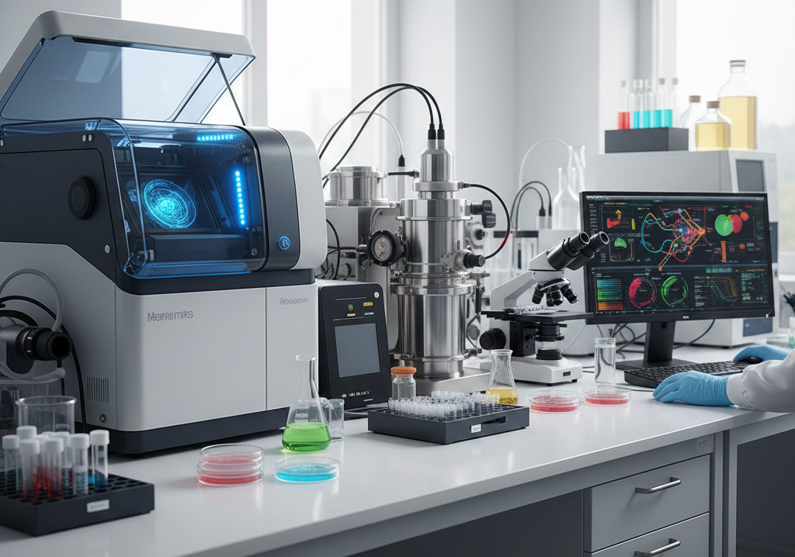
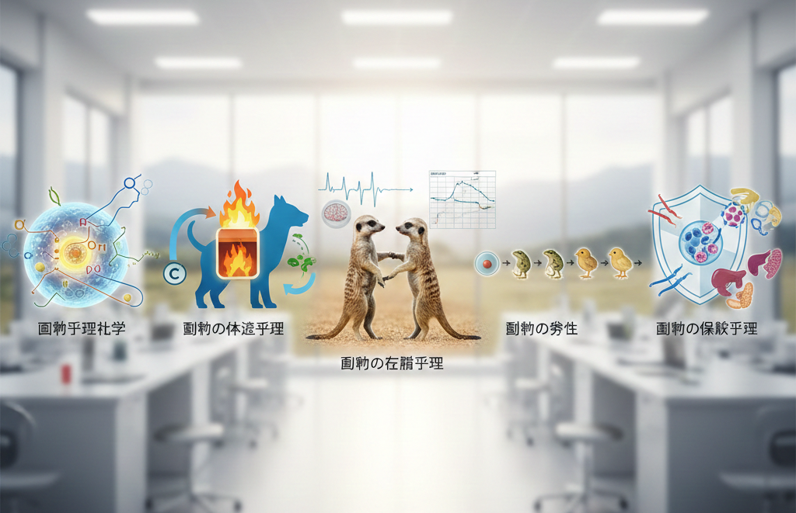
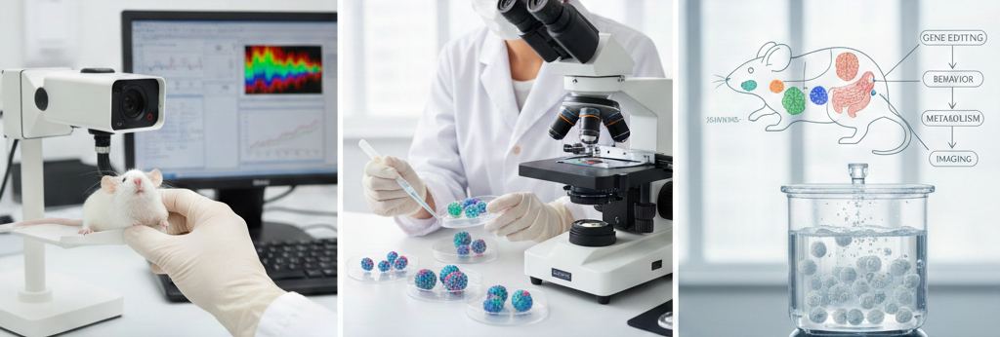
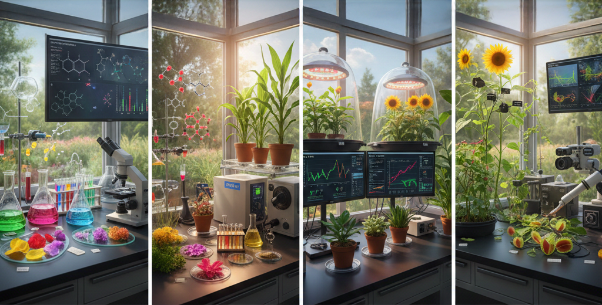
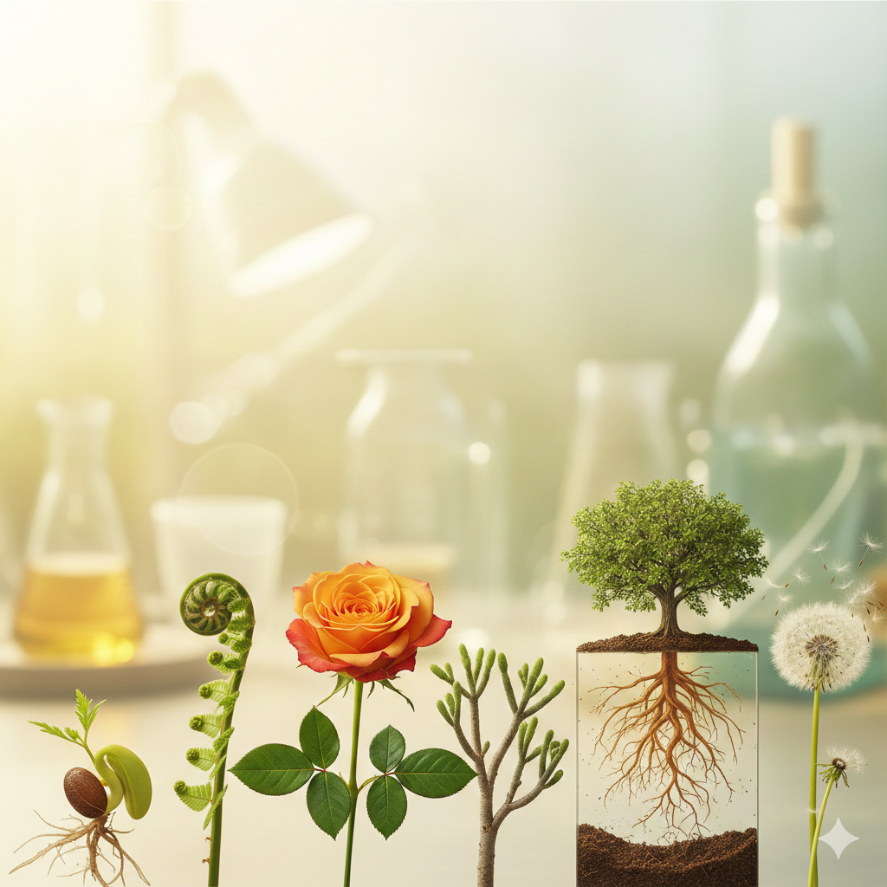
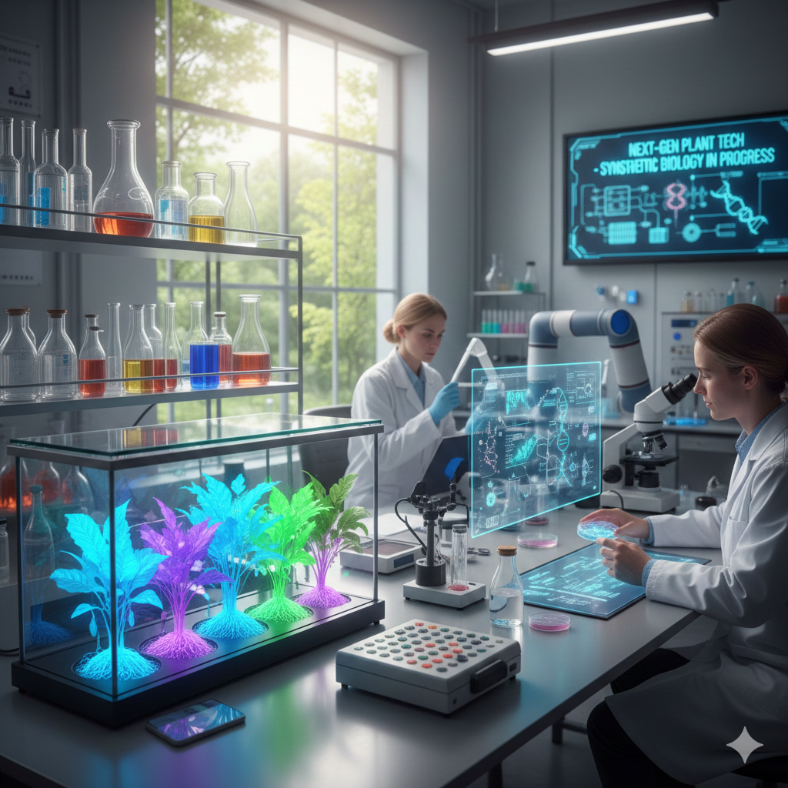

▼目次
動物は自らの多細胞システムを維持するために、細胞間の精密なコミュニケーションがなされている。受容体タンパク質によるリガンドの識別、それに続く細胞内シグナル伝達経路（カスケード）の活性化は、動物生理化学の主要な研究対象である。たとえばペプチドホルモンやステロイドホルモンが標的細胞に作用し、遺伝子発現や酵素活性を制御するメカニズムの解明は、内分泌系の理解において基盤的な役割を果たしてきた。
動物種によって異なる代謝特性や環境適応能は、しばしば酵素の基質特異性や反応速度論的な差異に起因している。また極限環境に生息する動物が持つ酵素の熱安定性や低温活性の研究は、タンパク質工学研究に重要な知見を提供する。
動物は外部環境の変化にかかわらず、細胞外液の組成や体温、血糖値などを一定範囲に保つ機構を有している。代謝生理における中心課題は、負のフィードバック制御による恒常性（ホメオスタシス）の維持メカニズムである。特に脊椎動物における視床下部を中心とした自律神経系・内分泌系の統合制御は、生命維持の要と目されている。
アデノシン三リン酸（ATP：adenosine triphosphate）を介したエネルギー転換効率や、基礎代謝量（BMR: Basal Metabolic Rate）の種間比較は、動物のエコロジカルな地位を決定づける。安定同位体を用いた代謝トレーサー法やバイオロギング技術の発展により、野生動物の自然条件下でのエネルギー消費量も精密に測定できるようになっている。
飢餓状態や冬眠や回遊といった極端な生理状態において、動物がいかに貯蔵資源（脂肪／グリコーゲン／タンパク質）を動員し代謝回路を切り替えるかは、適応戦略の観点からの関心事である。
行動生理は、動物が示す複雑な行動様式を神経系および内分泌系の生理メカニズムから説明する。行動は生理状態の結果であると同時に、生理状態を変化させる原因にもなる。
特定の刺激に対する反応や周期的な行動（サーカディアンリズム等）は、脳内の神経回路と循環ホルモンの相互作用によって制御される。たとえば攻撃行動／求愛行動／育児行動などは、テストステロンやオキシトシンといったホルモン濃度と受容する脳部位の感度に強く依存している。
動物が環境情報をどのように受容し処理して行動へと変換するかというプロセスは、行動生理の核心である。視覚／聴覚／嗅覚などの感覚入力が、いかにして運動指令へと翻訳されるのか。このプロセスを解明するために、電気生理学的な手法や光遺伝学（オプトジェネティクス）を用いた特定の神経細胞群の操作が用いられている。
行動の可塑性すなわち経験による行動の変化（学習）は、シナプスの伝達効率の変化（長期増強：Long-Term Potentiation(LTP)など）という生理化学現象としてとらえ直されている。
上述した三つの領域、生理化学・代謝生理・行動生理は、互いに独立しているわけではなく密接に連関している。
たとえば渡り鳥が数1000キロを移動する際、動機付けは行動生理的な日照時間の変化（光周性）によるホルモン分泌の変化によって生じる。長距離飛行を支えるのは、代謝生理による脂肪燃焼効率の最適化であり、その分子メカニズムを紐解けば、生理化学での脂肪酸分解酵素の活性調節に行き着く。
現代の動物研究においては、オミクス解析が標準化されつつある。特定の生理状態における遺伝子発現から代謝産物の変動までを一気通貫で解析することが可能となり、生理化学と代謝生理、行動生理の境界は急速に曖昧になりつつある。
同一個体からゲノム（遺伝子全体）、トランスクリプトーム（RNA全体）、プロテオーム（タンパク質全体）、メタボローム（代謝産物全体）のデータを取得し、それらを統合的に解析することで、生理状態の「シグネチャー」を定義することが可能となった。
たとえば特定の栄養刺激に対する応答をシグナル伝達系から最終的な代謝産物まで一気通貫でマッピングすることで、恒常性維持の全体像が可視化できる。
蓄積された膨大なオミクスデータに基づき、動物の生理機能をコンピュータ上でシミュレートする「イン・シリコ」の研究も進展している。心臓の拍動／神経回路の興奮伝播／集団内での感染症の拡散といった複雑な動態を数理モデル化し、実験的な検証が困難なシナリオの予測が可能となる。実験動物の使用数を削減するReductionの観点からも期待されている。

動物の個体は、単一の受精卵から複雑な空間配置を持つ多細胞体へと組織化する。単一の受精卵から多細胞体へと組織化プロセスを司る発生過程の知見は、動物の形態進化（Evo-Devo）を理解する役割を果たしている。
細胞運命の決定・軸形成・器官形成におけるシグナル分子（Hox遺伝子群／Wntシグナル／Notchシグナル等）の時空間制御は、動物種の間で高度に保存されている。またシグナル分子の発現タイミングや強度の微細な差異が、種固有の形態的特徴を生み出す原動力となっている。シングルセルRNAシークエンシング（scRNA-seq）技術の導入により、発生過程における各細胞の分化軌跡を網羅的に追跡することが可能となり、未分化性の維持と分化の分岐点におけるエピジェネティック制御機構が詳らかになりつつある。
また再生医療においてプラナリアやサンショウウオなどの高い再生能力を持つ動物種の研究は、哺乳類の組織再生の限界を打破するためのヒントを提示している。幹細胞の動態と微小環境（ニッチ）の相互作用を解明することは、老化や腫瘍化といった生命の崩壊プロセスを理解する上での鏡像ともなる。
動物が外的環境に適応し個体の生存を維持するためには、病原体や異物に対する防御機構である免疫系の機能が決定的である。個体の免疫応答の解析と集団レベルでの疾病予防を目的とする衛生的視点が密接に関係している。
動物の免疫系は、迅速な反応を担う自然免疫と高度な特異性と記憶を特徴とする獲得免疫の精緻なバランスで成り立つ。野生動物や家畜における新興感染症の拡大は、個体群の維持にとって脅威である。衛生の観点から宿主・病原体・環境の三要因の相互作用を解析する「One Health」アプローチが求められている。
集団飼育下にある動物のストレス応答が免疫系に与える影響、あるいは汚染物質の蓄積などの生息環境の悪化が内分泌攪乱を通じ抗病性を低下させるメカニズムの解明は、現代の動物衛生における課題である。
腸内細菌叢（マイクロバイオーム）が宿主の免疫代謝に及ぼす影響についての研究上では、単なる防御機構としての免疫を「共生系を維持するための調節機能」として再定義しつつある。
動物の形態は、生息環境における物理的な制約に対する適応結果である。形態比較が解剖学的構造の比較を通じ系統進化の軌跡を辿る一方、バイオメカニクス（生物力学）は動物の形態構造がいかに物理法則に則り機能するかを定量的に解析している。
骨格系や筋肉系の構造解析に、三次元CTスキャニングや有限要素法（FEM：Finite Element Method）を用いたシミュレーションを組み合わせ、動物の移動様式（歩行／飛翔／遊泳）の効率や、摂食時における咬合力の分布などを力学的に評価できる。鳥類の骨格の軽量化と強度維持の並立や魚類の流体抵抗を最小化する体型などは、工学的な生物模倣技術（バイオミミクリー）の対象としても注目されている。
形態比較やバイオメカニクスの知見は古生物学における絶滅動物の生態復元にも応用される。現生種の生理学的データと解剖学的知見を基盤とし、物理制約をパラメータとして入力することで化石記録からは得られない動的な生命現象の再現も試みられている。
生物比較の視点は、生命の「共通性」と「多様性」を同時に理解できる。全ゲノム配列が解読された動物種が飛躍的は増加し、単一のモデル生物（マウスやショウジョウバエなど）に依存した知見を他の分類群への拡張・検証分類は、生物原理の普遍性を問い始めている。
動物の生理機能や形態は、進化の過程で蓄積された系統発生的な制約を受ける一方で、特定の環境に対する適応の結果として多様性を示す。生物比較による解析は、祖先形質の保持と二次的な機能獲得を峻別することをも可能にする。たとえば哺乳類における酸素輸送能力の進化を研究する際、高地適応した種と潜水に適応した種のヘモグロビン構造を比較すればタンパク質レベルの適応戦略が浮き彫りになる。
体重（サイズ）の変化に伴う生理機能の変化を記述するアロメトリー（相対成長）の研究は、動物の設計原理を理解する基盤である。代謝率や寿命、循環器系の拍動周期が体重の何乗に比例するかという「クライバーの法則」などのスケーリング則は、単なる統計相関ではなく物理的・幾何的な制約に基づいた生命の最適化の結果としてとらえられている。
動物の表現型は、ゲノム情報のみならず環境因子との相互作用によって動的に形成される。エピジェネティクス（DNAメチル化やヒストン修飾など）の解析は、獲得形質が次世代に継承されるメカニズムや臨界期における環境刺激が将来の健康・行動に与える長期的影響を明らかにしつつある。
急激な気候変動や化学物質による汚染は、動物の生理機能に過大な負荷を与える。内分泌攪乱物質がホルモン受容体を介して発達異常を引き起こすメカニズムや、海洋酸性化が魚類の感覚生理に与える影響の研究などは、生物保全と生理化学の境界領域として注目されている。野生動物サンプリング技術と実験室内の制御実験を統合する高度な実験動物技術が求められる。

近年の実験動物技術における進展は、非侵襲的かつ高解像度なフェノタイピング技術の導入である。超高磁場MRIやマイクロCTを用いた画像解析やAIによる姿勢推定など自動化した行動解析システムにより、生体内の微細な変化の時系列での追跡が可能となった。遺伝子ノックアウト動物が示す表現型を、個体レベルの動態として包括的に記述できるようになった。
実験動物技術は操作技術の向上に留まらず、倫理的な要請に応える学問領域としても進化している。Replacement（代替）・Reduction（削減）・Refinement（改善）の3R原則に基づき、環境エンリッチメントによるストレス軽減や非終末的サンプリング手法の開発が進められている。特に実験動物の苦痛の客観的指標としてのグライメイス・スケール（表情解析）の導入などは、科学精度の向上と動物福祉の高度な両立を目指す。
ハダカデバネズミの耐がん性や冬眠動物の代謝抑制など野生種が持つ特異な形質の分子的基盤を解明するために、直接的な遺伝子介入が行われるようになった。これは、比較生物学的な観察から得られた仮説を実験動物技術で直接検証する「理論と実験」の新たなフィードバックループを生み出している。
ヒトの疾患関連遺伝子を導入したトランスジェニック動物や、患者由来の組織を移植したゼノグラフトモデルは、創薬研究において極めて重要な地位を占める。特に、霊長類を用いた遺伝子操作個体の作製は、脳神経疾患などの高次機能障害のメカニズム解明において、げっ歯類モデルでは到達不可能な知見をもたらしている。
iPS細胞などの幹細胞技術を用いて試験管内で構築された「ミニ臓器（オルガノイド）」や生体の機能をマイクロチップ上に再現する「Organs-on-a-chip」は、実験動物技術の延長線上にある新しい検証系である。オルガノイドやOrgans-on-a-chipは、動物実験の代替手段としてだけでなくヒトに特異的な生理反応を解明するための補完的ツールとして、動物研究のパラダイムをさらに拡張している。

植物には動物のような神経系が存在しないが、細胞間および器官間での情報伝達は極めて精密に行われている。植物の生理化学は、植物ホルモンを中心とした化学物質がいかにして受容されシグナル伝達カスケードを経て表現型の可塑性を制御しているかを解明する。
オーキシン／ジベレリン／サイトカイニン／アブシジン酸／エチレンといった古典的に研究の進んでいたホルモンに加え、近年ではストリゴラクトンやペプチドホルモンの機能解明が飛躍的に進んだ。これらのホルモンは単一の機能ではなく濃度勾配や受容体の発現パターンやホルモン相互の拮抗・協調作用（クロストーク）によって、複雑な出力（成長、分化、ストレス応答）を導き出す。たとえば根の重力屈性におけるオーキシンの不均等分布は、PINタンパク質という極性輸送体の動態によって化学的に規定される。
植物は移動できないため、草食動物や病原体からの攻撃に対しアルカロイド／テルペノイド／フェノール類など多様な二次代謝産物を合成し化学的に対抗する。これら化合物の合成経路の酵素化学解析は、植物の生存戦略を理解する上で不可欠で、医薬品原料としての産業利用とも密接に関連している。
環境ストレス下において植物細胞内では活性酸素種（ROS）やカルシウムイオンが、セカンドメッセンジャーとして機能する。特にROSはかつては細胞へのダメージを与える副産物と考えられていたが、現在では適切な濃度管理下でシグナル分子として機能し、全身獲得抵抗性（SAR）などの広範な防御応答をトリガーすることが明らかとなっている。
植物の代謝生理は、光エネルギーを化学エネルギーへと変換し、無機物から有機物を生成する植物特有の光合成プロセスを対象とする。
光合成は単なる化学反応の連続ではない。強光下での光阻害を回避する非光化学的消光（NPQ）や、二酸化炭素（CO₂）濃縮機構としての光合成、CAM（ベンケイソウ型有機酸代謝）などの適応進化は、代謝生理の白眉である。Rubisco（リブロース1,5-ビスリン酸カルボキシラーゼ/オキシゲナーゼ）の触媒効率と特異性の改良は、食糧問題や気候変動対策の観点からも数理モデルを用いた理論値と実験値の乖離を埋める研究が続けられている。
光合成産物（主にスクロース）が、供給源（ソース葉）から利用・貯蔵部位（シンク：根、果実、種子）へと師管を通じて運ばれる「転流」のプロセスは、個体の資源分配戦略そのものである。糖トランスポーター（SWEETタンパク質など）の活性制御が、いかにして個体全体のバイオマス配分を決定し最終的な収量や繁殖成功度に寄与するのかという問いは、代謝生理の重要なテーマである。
土壌中からの窒素／リン／カリウムなどの無機養分の吸収は、根の生理状態と密接に関連している。特に窒素代謝において硝酸態窒素やアンモニア態窒素のアミノ酸への同化プロセスは、光合成による炭素代謝と密接にリンクしており、炭素・窒素（C/N）バランスのセンシング機構が、植物の成長フェーズの転換を司っている。
植物には筋肉はないが、細胞壁の伸展性や浸透圧の制御あるいは細胞分裂の方向を制御することで、動的な行動を示す。植物の行動生理は、外部刺激に対する植物の不可逆的あるいは可逆的な応答を、個体レベルの戦略としてとらえる領域である。
光・重力・接触・水分勾配といった外的要因に対し植物は、器官の伸長方向を変化させる「屈性」を示す。屈性は、刺激を感知した細胞から別の部位へシグナルが伝達され、細胞壁の力学的特性が変化することで達成される。
またオジギソウの小葉閉鎖やハエトリソウの捕虫葉の運動に見られる「傾性」は、活動電位に似た電気シグナルの伝播と膨圧の急速な変化によって駆動される。傾性は、動物の行動に比肩する高速な生理出力の好例である。
季節の変化を読み取り適切な時期に開花するプロセスは、植物の生存と繁殖における最大の意思決定の一つである。葉で感知された日長情報（光周期）が、フロリゲン（FTタンパク質）という移動性シグナルとして茎頂へ運ばれ、発生プログラムを栄養成長から生殖成長へと劇的に転換させる。「時間の計測」と「空間的な情報伝達」の統合は、植物行動における時間軸上の戦略と言える。
近年の研究では植物が、揮発性有機化合物（VOCs）を介し近隣の個体に害虫の襲来を「警告」していることが明らかになっている。
また根圏における菌根菌ネットワークを介した資源や情報の共有も報告されており、個体の枠を超えた「集団としての植物の行動生理」という新たな視点が提示されている。

植物の形態は、細胞壁という硬い構造体と内部の膨圧（Turgor pressure）の均衡によって規定される。
セルロースミクロフィブリルの配向が、細胞がどの方向に伸長するかを物理的に決定する。微小管の動態がセルロースミクロフィブリルの配向を制御し、根の円筒形や葉の扁平な構造が形作られる。植物体は自身の重力や風圧といった外部応力を適応的に感知し、二次成長（肥大成長）による力学的強化を行う「自己最適化構造体」を形作るとバイオメカニクスの視点からは見なされる。
植物の形態は、遺伝的プログラムと力学的・化学的なフィードバックの相互作用によって自己組織化される。自己組織化プロセスを理解するためには、分子生物学的な知見を数理モデルに統合するアプローチが不可欠である。
茎の周囲に葉が規則正しく配置される「葉序」のメカニズムは、オーキシンの極性輸送と細胞壁の力学的な硬化が創り出すパターンとして説明される。シュート頂（SAM）における幹細胞維持の負のフィードバック系（CLV-WUS経路）と成長点における物理的な歪みが、いかにして数学的に厳密なフィボナッチ数列を生成するのか。この問いに対しバイオメカニクスとシミュレーションを組み合わせた研究が、「植物の設計図」の普遍性を明らかにしている。
根系や樹冠の分岐構造は、限られた資源を効率的に獲得するための空間充填戦略である。L-system（Lindenmayer system）などの数理アルゴリズムを用いた解析は、光獲得効率を最大化する葉の配置や、土壌中の水分・養分を探索する根の伸長パターンを予測する。L-systemの知見は、植物の解明のみならず都市計画や効率的な太陽光パネル配置などの工学的応用（バイオミミクリー）にも寄与している。
植物は過去の低温、乾燥、食害など環境刺激を記憶し、将来のストレスに対してより迅速かつ強力に応答する能力を持っている。
一定期間の低温に曝されることで開花能力を獲得する春化現象（バーナリゼーション）は、エピジェネティックな記憶の代表例である。開花抑制遺伝子（FLCなど）のクロマチン構造がヒストン修飾によって安定的に変化し、温度上昇後もその抑制状態が維持されるメカニズム解明は、分子遺伝学と生理学の統合的な成果のひとつである。
一度受けた乾燥ストレスなどの履歴がDNAのメチル化や小分子RNAの動態を通じ次世代にまで継承される可能性（経世代的記憶）が、示唆されている。経世代的記憶により変化の激しい環境下における個体群の適応速度が、純粋な遺伝変異による進化よりも速まる可能性が議論されている。
シロイヌナズナ（Arabidopsis thaliana）というモデル生物で得られた知見を、単子葉類・裸子植物・シダ類・コケ類へと拡張し、植物の進化の歩みが可視化されている。
多くの植物種は、進化の過程で全ゲノム重複を経験している。重複した遺伝子の機能分化（ネオフンクショナリゼーション）が、花の色や形の多様性や耐塩性の獲得などの新しい生理機能を生み出し進化させる原動力となってきた。比較ゲノミクスは、これらの「進化の実験室」の足跡を解読する手法である。
植物は、限られた炭素・窒素資源を「成長」「防御」「繁殖」のいずれに配分するかという経済的な意思決定を絶えず行っている。この分配の最適化こそが、多様な生活史戦略の根幹である。
植物が病原体に抵抗する際、成長が抑制される「Growth-Defense Trade-off」は、サリチル酸やジャスモン酸といったホルモン経路間の拮抗作用によって制御されている。近年の研究では、このトレードオフを緩和し、高い病害抵抗性と多収性を両立させるための遺伝子ネットワークの改変が進められており、農業生産の安定化に直結する成果が挙げられている。
種子は、環境が不適切な場合には数年から数十年もの間、生命活動を極限まで停止させて待機する。休眠の維持と解除は、アブシジン酸（ABA）とジベレリン（GA）の比率および温度や光によるエピジェネティックな制御によって決定される。土壌中のシードバンク（種子貯蔵）の動態を理解することは、雑草学の衛生的側面においても生態系の回復力を評価する上でも不可欠である。
植物における衛生的視点は、単なる病害虫の駆除（防除）に留まらず、植物体を取り巻く環境全体の健全性を維持・向上させる「植物健康管理（Plant HealthCare）」へと深化している。
植物は獲得免疫（抗体）を持たないが、細胞レベルでの強固な自己防御システムを備えている。
病原体特有の分子パターン（PAMPs）を細胞表面の受容体（PRRs）で感知する第1段階の防御（MTI）と、病原体側のエフェクターを細胞内のRタンパク質が検出し、過敏感反応（HR）による細胞死を誘導する第2段階の防御（ETI）が、進化の過程で軍拡競争のように高度化してきた。この免疫システムの解析は、農作物の病害抵抗性育種において中核をなす。
植物衛生の観点から、植物病原菌の空間的な伝播様式を解析する疫学的アプローチは極めて重要である。気象データとセンサーネットワークを統合した病害発生予測モデルは、農薬の使用量を最適化するだけでなく、耐性菌の出現を抑制するための戦略的な介入を可能にする。また特定の病原体に晒される前に非病原性微生物や低濃度のシグナル分子を用いて植物の免疫系を活性化させる「プライミング」技術は、植物衛生におけるワクチン的な役割を果たしている。
植物の健康は、根圏（Rhizosphere）に生息する膨大な微生物群集すなわち「植物マイクロバイオーム」の状態に強く依存する。衛生的な管理対象は植物個体から土壌環境へと拡張され、有益な菌群（PGPR: Plant Growth-Promoting Rhizobacteria）の定着をうながす「土壌の健全化」が追求されている。土壌の健全化は、化学肥料への依存を低減しつつ持続可能な生産性を維持するための次世代の衛生的戦略である。
急激な環境変化は、植物の適応速度を上回るストレスとなり、種の絶滅や植生分布の激変を招いている。
気候変動に伴う干ばつの頻発に対し、植物は気孔の閉鎖による蒸散抑制や浸透圧調節物質（プロリン等）の蓄積によって対抗する。しかし限界を超えた乾燥は木部における導管の塞栓（キャビテーション）を引き起こし、水輸送システムの不可逆的な崩壊をもたらす。これらの生理的限界値を種ごとに特定し、森林の衰退リスクを予測する「生理生態学的予測モデル」の開発が急務となっている。
温暖化は植物の開花時期（フェノロジー）を早めるが、それに依存する送粉昆虫の活動時期との間にズレ（mismatch）を生じさせることがある。この生態学的なミスマッチは、植物の繁殖成功度を低下させるだけでなく生態系全体の食物網を揺るがす。生物比較の手法で多様な種のフェノロジー応答を網羅的に解析し、生態系の脆弱性を評価する研究が進められている。

現代の植物研究は、実験室内の精密な解析からフィールドにおける網羅的な表現型解析（フェノミクス）へとシフトしている。
ドローンやマルチスペクトルカメラを用い数万個体の成長動態や光合成能や水分ストレス状態を非破壊的かつリアルタイムに定量化する。この定量化技術でゲノム情報（G）と環境要因（E）が、いかにして表現型（P）として現出するかという方程式を解明することが可能となった。
CRISPR/Cas9等の技術は、モデル生物以外の果樹や難防除雑草などの有用植物においても迅速な機能欠損・改変を可能にした。迅速な機能欠損・改変は、環境負荷を低減しつつ収量を最大化する「持続可能な植物生産システム」の構築に向け理論的で実効的なブレイクスルーとなっている。
植物研究における再現性と定量性の確保は、実験植物技術の進展によって支えられている。動的に変化する屋外環境とは対照的に環境制御型の栽培施設（ファイトトロン）や植物工場における精密な環境制御は、特定の環境要因が植物の生理状態に与える影響を単離し解析することを可能にした。
実験植物技術の中核をなすのは、組織培養によるクローン増殖と個体再生技術である。特定の組織や細胞から全能性を引き出しカルスを経て個体へと再分化させるプロセスは、ゲノム編集や形質転換体の作出において不可欠なステップである。クローン増殖と個体再生技術では、植物ホルモンの濃度バランスを数理モデルとして最適化する試みがなされ、難易度の高い木本植物や絶滅危惧種の保全にも応用されている。
近年の実験植物技術は、ミクロな観察系においても飛躍的な進化を遂げた。Plant-on-a-chipと呼ばれるマイクロ流体デバイス技術は、根の成長過程や根圏における微生物との相互作用を単一細胞レベルでリアルタイム観察することを可能にしている。共焦点レーザー走査顕微鏡やライトシート顕微鏡を用いた4次元イメージングと組み合わせ、細胞分裂の動態やシグナル分子の伝播を非侵襲的にかつ個体への物理的ストレスを最小限に抑えた状態で実験植物の状態を記述できるようになった。
現代の植物研究は、自然界に存在する形質を観察・改良する段階から、望ましい機能をゼロから構築する「植物合成生物学」の段階へと移行しつつある。
多くの主要作物が採用しているC3光合成は、Rubiscoの酸素親和性に起因する光呼吸というエネルギー損失を抱えている。合成生物学的なアプローチによりシアノバクテリアや藻類のCO2濃縮機構（カルボキシソームやピレノイド）を高等植物の葉緑体内に構築する研究や、光呼吸回路をバイパスする代謝経路の導入が試みられている。光呼吸回路をバイパスする代謝経路の導入は、21世紀の食糧・エネルギー問題を解決するための究極のバイオテクノロジーとして期待されている。
植物の持つ鋭敏な環境応答能を利用し、特定の化学物質（重金属、爆発物、大気汚染物質など）を検知した際に葉の色を変化させたり蛍光を発したりする「センチネル・プラント（守衛植物）」の開発が進んでいる。センチネル・プラントは、広域な環境モニタリングを低コストかつ自律的に行うための新しい実験植物技術の展開である。
単一のモデル個体ではなく種内の広範な多様性を網羅した「パンゲノム」の構築により、栽培化の過程で失われた有用遺伝子（耐病性や環境適応性に関連するもの）を野生種から再発見する試みが加速している。精密なゲノム編集技術を用いて、野生種の優れた適応能を既存の作物に迅速に取り込む「Denovo Domestication（新奇栽培化）」が可能になりつつある。
植物資源の研究と利用は、名古屋議定書などの国際的な枠組みに基づく「遺伝資源へのアクセスと利益配分（ABS）」の遵守が求められる。またゲノム編集作物の社会実装にあたっては、科学的な安全性評価に加え、倫理的・法的な対話を通じた合意形成が不可欠である。実験植物技術の進展がもたらす可能性と、生態系への潜在的な影響を公正に評価し持続可能な社会の構築に資することが、現代の植物研究者の責務とされる。
